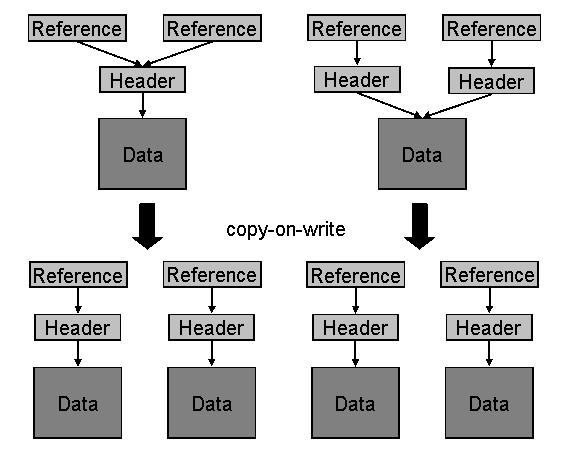

AS ABAP Release 754, ©Copyright 2019 SAP SE. All rights reserved.
ABAP Keyword Documentation → ABAP − Reference → Declarations → Declaration Statements → Data Types and Data Objects → Types and Objects - Overview → Data Objects → Memory Management of Deep Objects →Sharing Between Dynamic Data Objects
When reference variables are assigned, only the references are copied. After an assignment, source and target variables point to exactly the same data object or the same instance of a class (to the header).
Sharing takes place internally when assignments are made between similar strings and similar internal tables that have row types that do not contain table types. This means that the actual data values are not copied for the time being. Only the necessary administration entries are copied, so that the target object points the same data as the source object.
In the case of strings, a new internal reference is created that points to the existing string header. In the case of internal tables, a new internal reference is created along with a new table header that points to the existing table body.
Naturally, sharing between dynamic data objects is active only as long as multiple dynamic data objects are involved or if more than one internal reference points to the data values. As soon as only one internal reference points to the data, sharing becomes inactive. This can occur, for example, if dynamic data objects only exist during the lifetime of a procedure or are recorded as anonymous data objects by Garbage Collector.
Active sharing between existing dynamic data objects is canceled at the precise moment when either the source object or target object is accessed in change mode (copy-on-write semantics). The data values are then copied and the references and headers modified accordingly.
The following figure illustrates how dynamic data objects are shared. The upper left section shows how strings are shared and the right section shows how internal tables are shared. The lower section shows how sharing is terminated when the source or target object is modified.

Notes